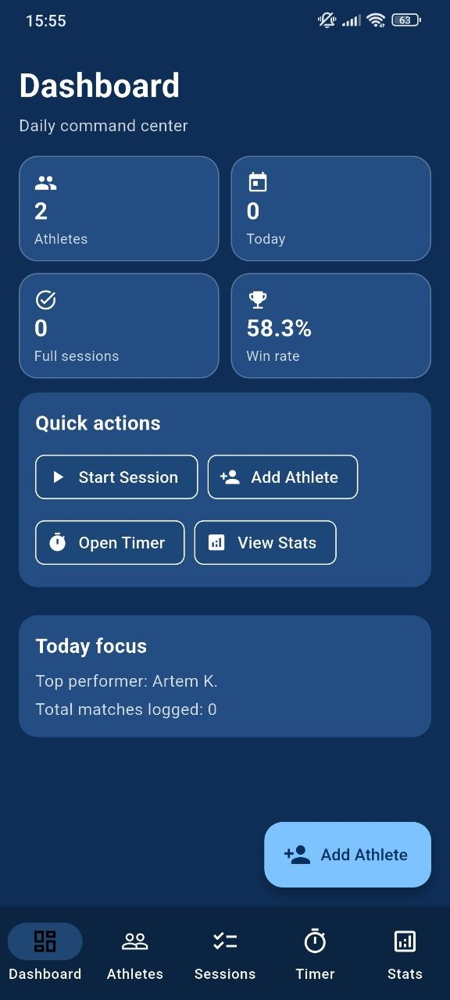
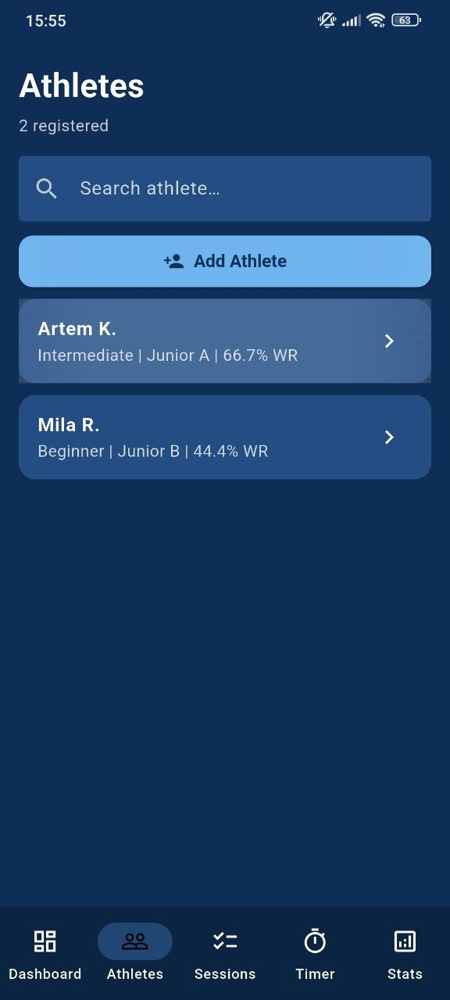
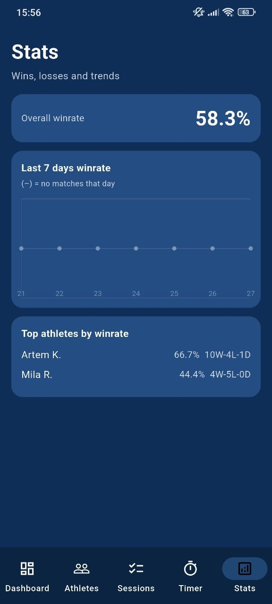
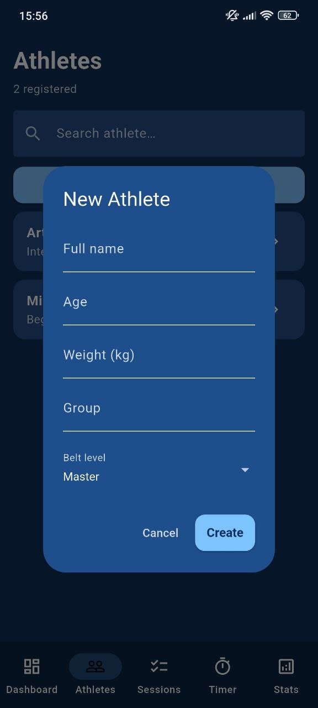
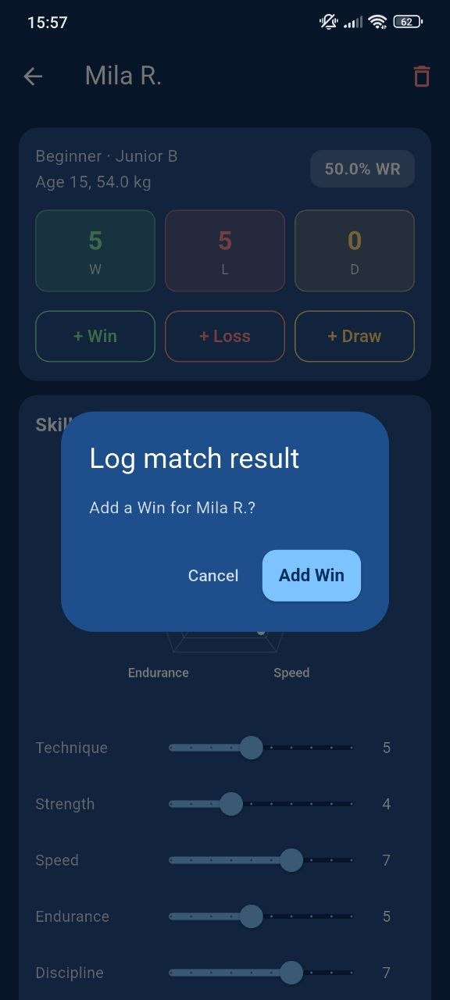

Daily Dashboard
See athletes, today’s activity, full sessions, win rate, and quick actions in one place.
Coach command center
1w Athletic Dashboard gives coaches a fast mobile workspace for athlete profiles, match results, training checklists, round timers, and win-rate analytics.



Features
Built around simple actions, clear cards, athlete progress, and quick decisions.
See athletes, today’s activity, full sessions, win rate, and quick actions in one place.
Manage athletes with age, weight, group, belt level, results, and win-rate records.
Track technique, strength, speed, endurance, and discipline visually.
Log warm-up, technique drills, grip fighting, randori rounds, and cooldown blocks.
Configure round length, rest time, and round count with a large readable timer.
Review overall win rate, weekly trends, and top athletes by performance.
Athlete control
Add athletes, open profiles, record wins, losses, or draws, and keep performance history easy to read on mobile.

Screen preview
Selected screens show the strongest parts of the app experience.

Why coaches like it
The app keeps key training information in a compact structure, so coaches can move between athletes, sessions, timers, and stats without losing focus.
Profiles help keep progress, results, and skill scores visible.
Session checklists make practice easier to organize and finish.
Win-rate and top athlete sections make trends easy to scan.
Workflow
Create a roster with basic athlete information and belt level.
Use checklists and timers to structure daily training blocks.
Record wins, losses, and draws for each athlete profile.
Check win rates, trends, and top performers after training.
Highlights
A compact mobile dashboard that makes team tracking feel professional and simple.
“The dashboard is clear and gives me the key coaching numbers immediately.”
Coach“Athlete profiles and result logging are fast enough to use during practice.”
Trainer“The timer and checklist make session structure much easier to control.”
Team leadGet started
Download 1w Athletic Dashboard and manage athletes, sessions, timers, and stats with confidence.